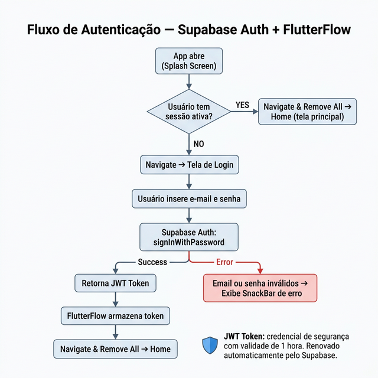
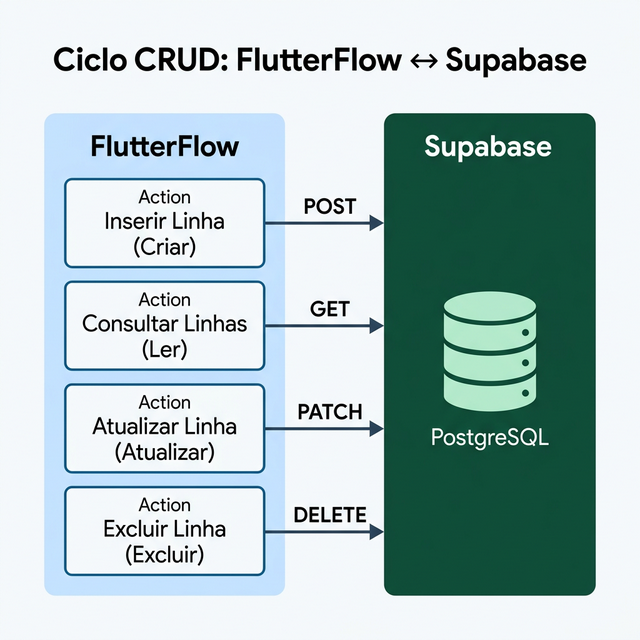
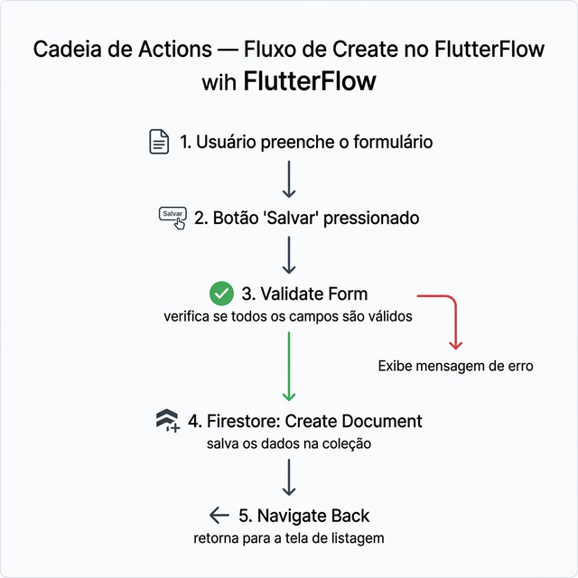

SEMANA 6 – CRUD Completo
Nesta semana, você irá configurar o Firebase no FlutterFlow, criar as coleções no Firestore e implementar os fluxos de CRUD do seu projeto, além de preencher os dados iniciais (seeds) para permitir testes realistas.
O acrônimo CRUD representa as quatro operações básicas de qualquer sistema que gerencia dados: Create (criar), Read (ler), Update (atualizar) e Delete (excluir). No FlutterFlow, essas operações são configuradas via Actions e conectadas ao banco de dados.
Fonte: Martin, J. (1983). Managing the Data-base Environment. |
6.1 Configurando o Firebase no FlutterFlow
Antes de implementar qualquer fluxo de CRUD, o banco de dados precisa estar criado e conectado ao FlutterFlow. O Firebase é a plataforma de backend utilizada neste projeto — ela fornece o Firestore (banco de dados NoSQL) na nuvem, acessível direto pelo FlutterFlow sem necessidade de código.
|
O FlutterFlow não possui suporte a banco de dados local relacional (como SQLite) sem código personalizado avançado. As únicas opções nativas para persistência de dados são serviços na nuvem: Firebase, Supabase ou uma API REST. Para este projeto, o Firebase é a escolha ideal — é gratuito (plano Spark), visual, integrado nativamente ao FlutterFlow e não exige conhecimento de SQL. |
Passo 1 — Criar o Projeto no Firebase
- Acesse console.firebase.google.com e faça login com sua conta Google.
- Clique em Adicionar projeto (ou Add project).
- Defina um nome para o projeto (ex.:
financampus). - Desative o Google Analytics (opcional para projetos acadêmicos) e clique em Criar projeto.
- Aguarde a criação do projeto (cerca de 1 minuto).
Passo 2 — Conectar o Firebase ao FlutterFlow
O FlutterFlow oferece uma conexão automática com o Firebase. Siga os passos:
- No FlutterFlow, clique no ícone de engrenagem ⚙️ na parte inferior do menu lateral para abrir o App Settings.
- No painel esquerdo, role até a seção Integrations e clique em Firebase.
- Clique em Connect Firebase Project — o FlutterFlow solicitará acesso à sua conta Google para listar os projetos Firebase disponíveis.
- Selecione o projeto criado no Passo 1 e confirme a conexão.
- O FlutterFlow configurará automaticamente as credenciais (API Key, Project ID, etc.).
|
As credenciais do Firebase são configuradas automaticamente pelo FlutterFlow.
Nunca compartilhe o arquivo |
Passo 3 — Criar as Coleções no Firestore
Com o Firebase conectado, agora vamos criar as coleções diretamente no FlutterFlow:
- No FlutterFlow, acesse Firestore no menu lateral (ícone de banco de dados).
- Clique em + (Create Collection).
- Nomeie a coleção (ex.:
categorias) e adicione os campos definidos na Semana 5:nome— Stringicone— Stringcor— String
- Repita para a coleção
transacoescom os campos:tipo— Stringdescricao— Stringvalor— Doubledata— Timestampusuario_uid— Stringcategoria_ref— Document Reference (→ categorias)created_at— Timestamp
- O FlutterFlow criará automaticamente as coleções no Firestore e disponibilizará as Actions de CRUD (Create Document, Update Document, Delete Document, Query Collection).
|
Nesta semana, as regras de segurança do Firestore estarão no modo teste (qualquer pessoa autenticada pode ler/escrever) para que você consiga testar as operações CRUD livremente durante o desenvolvimento. Na Semana 9, você configurará as Security Rules, garantindo que cada usuário acesse apenas seus próprios dados. |
6.2 Autenticação com Firebase
Antes de implementar o CRUD, vamos configurar a autenticação do
app. Isso é fundamental: ao criar documentos no banco, o campo
usuario_uid será preenchido automaticamente com o
UID do usuário logado — garantindo que cada pessoa acesse
apenas seus próprios dados.
Passo 1 — Habilitar a Autenticação no Firebase
- No console do Firebase, acesse Authentication no menu lateral.
- Clique em Get Started (ou Primeiros passos).
- Na aba Sign-in method, habilite o provedor Email/Password (e-mail e senha).
- Salve as configurações.
Passo 2 — Ativar a Autenticação no FlutterFlow
- No FlutterFlow, acesse Settings → Firebase.
- Ative a opção Authentication.
- Configure a Entry Page (tela de Login) e a Logged In Page (tela Home). O FlutterFlow redirecionará automaticamente o usuário para a tela correta ao abrir o app.
Passo 3 — Implementar as Telas de Autenticação
As telas de Login e Cadastro usam as Actions de autenticação do Firebase, listadas na tabela abaixo:
| Action | Descrição | Onde usar |
|---|---|---|
| Create Account (Email) | Cria um novo usuário com e-mail e senha | Botão "Criar Conta" |
| Log In (Email) | Autentica um usuário existente | Botão "Entrar" |
| Log Out | Encerra a sessão do usuário | Botão "Sair" (Configurações) |
| Send Password Reset Email | Envia e-mail para redefinir a senha | Link "Esqueci minha senha" |
Implementando o Cadastro (Create Account)
- Na tela de Cadastro, adicione campos para E-mail, Senha e Confirmar Senha.
- No botão "Criar Conta", configure a Action: Auth → Create Account (Email).
- Mapeie os campos de e-mail e senha aos respectivos TextFields.
- Adicione uma Action subsequente: Navigate To → Home.
Implementando o Login (Log In)
- Na tela de Login, adicione campos para E-mail e Senha.
- No botão "Entrar", configure a Action: Auth → Log In (Email).
- Mapeie os campos e adicione: Navigate To → Home.
Implementando o Logout (Log Out)
- Na tela de Configurações (ou Perfil), adicione um botão "Sair".
- Configure a Action: Auth → Log Out.
- Adicione: Navigate To → Login (com Replace Route ativado para evitar que o botão "Voltar" retorne à tela anterior).
|
Ao fazer login, o Firebase retorna um token de autenticação
que identifica o usuário. O FlutterFlow armazena automaticamente esse token
e o envia em cada requisição ao Firestore. As Security Rules usam o
|
A Figura 6.1 detalha o fluxo completo de autenticação, incluindo a verificação de sessão na Splash Screen e o redirecionamento automático.

6.3 As Quatro Operações CRUD
| Operação | Firestore | FlutterFlow Action |
|---|---|---|
| Create | Adicionar documento à coleção | Create Document |
| Read | Consultar coleção / obter documento | Query Collection / Get Document |
| Update | Atualizar campos de um documento | Update Document |
| Delete | Excluir documento da coleção | Delete Document |
|
Action (FlutterFlow): bloco de lógica executado em resposta a um evento (clique de botão, carregamento de página, etc.). As Actions conectam a interface do usuário com o banco de dados e outras integrações. |
6.4 Implementando os Fluxos CRUD
Com as coleções criadas e o Firebase conectado, é hora de implementar os fluxos de interação com os dados. O CRUD (Create, Read, Update, Delete) representa as quatro operações fundamentais sobre qualquer coleção. No FlutterFlow, cada operação corresponde a uma Action específica que se comunica com o Firestore via a SDK do Firebase, como ilustrado na Figura 6.1.

Nesta semana você implementa os fluxos de escrita de dados: criar um novo documento (Create), editá-lo (Update) e excluí-lo (Delete). Ao longo desses fluxos você usará Actions de navegação — Navigate Back e Navigate To — apenas para redirecionar o usuário depois que uma operação é concluída (ex.: voltar para a tela anterior após salvar). Isso é diferente de arquitetar a navegação do app: a estrutura completa de telas, o diagrama de fluxo e as listas dinâmicas conectadas ao banco são o foco da Semana 7.
Antes de detalhar cada fluxo, é fundamental entender a diferença entre dois conceitos essenciais do FlutterFlow: widgets e propriedades.
|
Widget é um elemento visual que você arrasta para a tela: Button, TextField, ListView, Column, Row, Container, Card, Icon, Text etc. Cada widget aparece na árvore de componentes no painel esquerdo do FlutterFlow. Propriedade é uma configuração de um widget já inserido na tela, ajustada no painel direito: por exemplo, o label de um Button, a initialValue de um TextField, o mainAxisAlignment de uma Column, ou a font size de um Text. Propriedades não são elementos visuais independentes — elas configuram a aparência e o comportamento de um widget existente. |
🟢 Fluxo de Create (Inserção)
O fluxo de Create envolve uma tela de formulário onde o usuário preenche os dados e os salva no Firestore.
-
Crie a tela de formulário.
No painel de widgets, localize a seção Commonly Used Elements e arraste um widget Column como contêiner principal da tela — ele empilha os elementos verticalmente. -
Adicione os campos de entrada.
Para cada dado a ser coletado, arraste um widget TextField (encontrado em Base Elements) dentro da Column. Configure as seguintes propriedades de cada TextField no painel direito:- Label Text — rótulo exibido dentro do campo (ex.: "Descrição").
- Controller Path — vincula o campo a uma variável de estado para capturar o valor digitado.
- Keyboard Type — define o tipo de teclado (texto, número, e-mail, data etc.).
- Validator — regra de validação (ex.: campo obrigatório, valor mínimo).
- Selecione o widget DropDown na árvore de componentes.
- No painel direito, em Options Source, escolha Firestore Query.
- Configure uma Query Collection na coleção
categorias(sem filtros, para listar todas as categorias disponíveis). - Mapeie o campo
nomecomo label (o texto exibido ao usuário) e o Document Reference como value (o valor armazenado como categoria_ref na transação). -
Envolva os campos em um widget Form Validation.
Encontrado na seção de widgets avançados (pesquise por "Form Validation" com Ctrl+F), ele agrupa os TextFields e permite validar todos de uma vez antes de salvar. -
Adicione o botão "Salvar".
Arraste um widget Button (em Commonly Used Elements) abaixo dos campos. Configure as propriedades:- Text — defina o rótulo do botão: "Salvar".
- Width — defina como Infinity (largura total) para um visual mais moderno.
-
Configure a Action do botão.
Clique no botão e abra o painel de Actions. Adicione as seguintes ações na ordem:- Validate Form — valida todos os campos antes de prosseguir.
- Firestore → Create Document — selecione a coleção correta e mapeie cada
campo ao valor do TextField correspondente. O campo
usuario_uiddeve ser preenchido com o Authenticated User UID. - Navigate Back (ou Navigate To) — redireciona para a tela de listagem após o salvamento.
|
Como as coleções já estão criadas no Firestore, o DropDown
de categoria pode ser populado diretamente com os dados da coleção
Dessa forma, quando o usuário selecionar uma categoria, a
referência do documento será salva na coleção
|
|
O fluxo de Read — construção das telas de listagem com ListView dinâmico conectado ao Firestore — é desenvolvido na Semana 7, junto com o mapeamento completo das telas e o diagrama de navegação do app. Aqui na Semana 6 o foco é nos formulários de criação, edição e exclusão. |
🟡 Fluxo de Update (Atualização)
O fluxo de Update reaproveita a estrutura do formulário de Create, mas pré-preenche os campos com os dados do documento existente e usa a action Update Document.
-
Crie (ou duplique) a tela de edição.
Você pode duplicar a tela de criação para reaproveitar os widgets já configurados. Adicione um Page Parameter do tipoDocument ReferencechamadotransacaoRefpara receber a referência do documento. -
Carregue os dados existentes.
Configure um Backend Query do tipo Get Document na tela, usando otransacaoRefcomo referência. Isso busca o documento ao abrir a tela. -
Pré-preencha os campos.
Para cada widget TextField, configure a propriedade Initial Value como o campo correspondente do resultado da query (ex.: o initialValue do campo "Descrição" recebe o valor detransacao.descricao). -
Configure a Action do botão "Salvar".
- Validate Form — valida os campos.
- Firestore → Update Document — use o
transacaoRefpara atualizar o documento correto e mapeie cada campo ao novo valor. - Navigate Back — retorna para a tela de detalhe.
🔴 Fluxo de Delete (Exclusão)
-
Adicione o botão "Excluir".
Na tela de detalhe, arraste um widget Button. Configure a propriedade Text como "Excluir" e opcionalmente use um widget Icon (ícone de lixeira) à esquerda para reforço visual. -
Configure um diálogo de confirmação.
Na Action do botão, adicione primeiro: Alert Dialog → mensagem "Deseja excluir este registro?" com os botões "Cancelar" e "Confirmar". A exclusão só ocorre na ramificação de confirmação. -
Configure a Action de exclusão.
Dentro da ramificação "Confirmar" do diálogo, adicione:- Firestore → Delete Document → use o
transacaoRef. - Navigate Back → retorna para a listagem após a exclusão.
- Firestore → Delete Document → use o
|
Sempre valide os dados antes de executar um Create Document ou Update Document. No FlutterFlow, use a Action Validate Form antes da chamada ao banco. Para exclusões, sempre exiba uma confirmação ao usuário — operações de delete geralmente são irreversíveis. |
O Padrão de Cadeia de Actions (Action Chain)
Uma boa prática no FlutterFlow é sempre encadear as Actions na ordem correta, garantindo que erros sejam tratados antes de chamar o banco de dados. A Figura 6.2 ilustra a sequência exata para o fluxo de Create — o mesmo padrão se aplica ao Update.

🤖 Acelerando com a IA do FlutterFlow
O FlutterFlow possui um recurso de geração de páginas e componentes com IA que pode acelerar muito a criação das telas do seu projeto. Para acessá-lo, clique no botão Generate with AI no painel de widgets (aba AI Generation History). Você pode gerar uma Page (tela inteira) ou um Component (parte reutilizável).
|
No plano gratuito do FlutterFlow, a geração com IA permite criar até 5 páginas. Por isso, priorize as telas mais complexas e crie as mais simples manualmente. Cada geração consome um crédito — use com prompts bem detalhados para aproveitar ao máximo. |
Como escrever um bom prompt para geração de tela
Quanto mais detalhado o prompt, melhor o resultado. Especifique os widgets desejados, o layout, as cores e a funcionalidade. Veja o exemplo abaixo para a tela de login do FinanCampus:
🔐 TELA — LOGIN / CADASTRO Crie uma tela de autenticação moderna e centralizada para o app FinanCampus. Elementos: - Logo ou título "FinanCampus" no topo - Campo de e-mail com ícone - Campo de senha com botão de mostrar/ocultar senha - Botão principal "Entrar" - Texto com link "Criar conta" - Layout com espaçamento confortável e responsivo - Botão com largura total - Design minimalista com cores suaves
Prompt completo para gerar o app FinanCampus por inteiro
Se desejar gerar cada tela individualmente de forma consistente, use o prompt geral abaixo como referência e adapte para cada página. Lembre-se: o FlutterFlow gera uma página por vez.
Crie um aplicativo mobile chamado "FinanCampus", um app simples e visual para controle financeiro pessoal. Utilize design moderno e limpo com Material Design, cards com cantos arredondados, sombra suave e cor principal para destacar informações financeiras. BACKEND Usar autenticação com Firebase (e-mail e senha). Cada usuário deve visualizar apenas seus próprios dados. ESTRUTURA DE DADOS (Firestore) Coleção categorias: nome, icone, cor Coleção transacoes: tipo (Renda ou Despesa), descricao, valor, data, categoria_ref, usuario_uid PÁGINAS (gerar uma por vez no FlutterFlow) 1) Login (página: login) - Abas "Criar Conta" e "Entrar" - Campo de e-mail - Campo de senha com botão mostrar/ocultar - Campo de confirmar senha (aba Criar Conta) - Botão principal "Começar" / "Entrar" - Opção "Continuar com Google" - Logo do app no topo com fundo azul suave 2) Início (página: inicio) - AppBar com logo, ícone de busca e avatar do usuário - Seletor de mês com setas de navegação (◀ mês ▶) - Cards de resumo: Despesas, Saldo e Rendas - Lista de transações agrupadas por categoria Cada grupo mostra: ícone da categoria | nome | descrição | valor - Botão flutuante "Adicionar" para nova transação - Barra de navegação inferior com 3 abas: Estatísticas | Início | Configurações 3) Relatório (página: relatorio) - Título "Estatísticas" com ícone de busca - Seletor de mês com setas de navegação - Barra de overview (gráfico horizontal) com proporção visual de despesas vs. rendas - Seção "Detalhes" com lista por categoria: ícone da categoria | nome | quantidade de transações | valor | percentual - Ícone decorativo (caixa vazia) quando não houver dados 4) Configurações (página: configuracoes) - Título "Configurações" - Card com avatar, nome e e-mail do usuário - Lista de opções: Escolher idioma | Redefinir senha | Sair | Excluir conta | Doação - Cada opção com ícone à esquerda e seta à direita - Barra de navegação inferior (mesma das outras telas) 5) Nova Transação (página: novaTransacao) - AppBar com seta de voltar e título "Nova transação" - Dropdown para tipo (Renda ou Despesa) - Dropdown para categoria - Campo numérico para valor - Campo de descrição (opcional) - Seletor de data - Botão "Adicionar" com largura total 6) Editar Transação (página: editarTransacao) - AppBar com seta de voltar e título "Editar" - Mesmos campos da tela Nova Transação, pré-preenchidos com os dados da transação selecionada - Botão "Editar" com largura total - Link "Excluir" em vermelho abaixo do botão 7) Buscar Transação (página: buscarTransacao) - Campo de busca por texto (descrição da transação) - Filtros por tipo, categoria e período - Lista de resultados no mesmo formato da tela Início NAVEGAÇÃO Barra de navegação inferior fixa com 3 abas: Estatísticas (relatorio) | Início (inicio) | Configurações (configuracoes). Garantir responsividade para celulares Android.
|
Sempre valide os dados antes de executar um Create Document ou Update Document. No FlutterFlow, use a Action Validate Form antes da chamada ao banco. Para exclusões, sempre exiba uma confirmação ao usuário — operações de delete geralmente são irreversíveis. |
6.5 Dados Iniciais (Seeds)
Os seeds (ou dados de semente) são registros iniciais inseridos no banco de dados para popular as coleções com informações de exemplo. Eles são essenciais para testar o funcionamento do app durante o desenvolvimento.
Como Criar Seeds no Firestore
No console do Firebase, acesse Firestore Database e adicione documentos manualmente em cada coleção. Alternativamente, crie os seeds diretamente pelo app (usando a tela de criação que você acabou de implementar).
Seeds para a coleção categorias
| nome | icone | cor |
|---|---|---|
| Alimentação | restaurant | #FF6B6B |
| Transporte | directions_car | #4ECDC4 |
| Lazer | celebration | #45B7D1 |
| Saúde | favorite | #96CEB4 |
| Educação | school | #FFEAA7 |
| Moradia | home | #DDA0DD |
| Outros | more_horiz | #B0B0B0 |
|
Crie pelo menos 5 a 10 documentos de seed para cada coleção auxiliar (categorias, tags, tipos, etc.). Isso permite testar listagens, filtros e relacionamentos de forma realista durante o desenvolvimento. |
6.6 Documentando os Fluxos de CRUD
Documente cada fluxo CRUD do projeto em uma tabela ou diagrama simples, indicando quais telas estão envolvidas e quais Actions são executadas.
| Operação | Tela de Origem | Action Executada | Tela de Destino |
|---|---|---|---|
| Create | Tela "Nova Transação" (novaTransacao) |
Create Document em transacoes | Tela "Início" (inicio) |
| Read (lista) | Tela "Início" (inicio) |
Query Collection em transacoes | — |
| Read (detalhe) | Início → clique no item | Get Document em transacoes | Tela "Editar Transação" (editarTransacao) |
| Update | Tela "Editar Transação" (editarTransacao) |
Update Document em transacoes | Tela "Início" (inicio) |
| Delete | Tela "Editar Transação" (editarTransacao) |
Delete Document em transacoes | Tela "Início" (inicio) |
6.7 Entregável da Semana
|
|
Antes de finalizar a semana, confirme que o ciclo está funcionando: adicione um ListView simples em qualquer tela com uma Firestore Query na coleção principal do seu CRUD. Não precisa estilizar — o objetivo é apenas confirmar que os dados inseridos aparecem na listagem. A implementação completa das listas, com filtros, ordenação e cards compostos, é o foco da Semana 7. |
Na próxima semana, você irá mapear todas as telas do app e criar o diagrama de navegação completo do projeto.
6.8 Estudo de Caso: FinanCampus
Veja como o grupo do FinanCampus implementou o CRUD e documentou os fluxos.
|
Telas implementadas nesta semana:
Fluxos CRUD implementados para a entidade Transação:
Seeds adicionais inseridos: 10 documentos de exemplo (5 rendas + 5 despesas) distribuídos em 5 categorias, com valores e datas variados, para testar a listagem e os filtros da tela Início. |